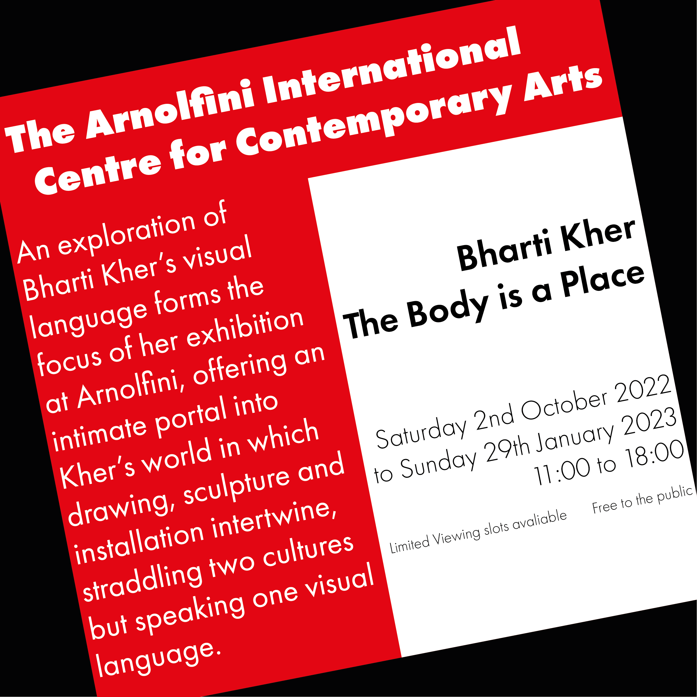
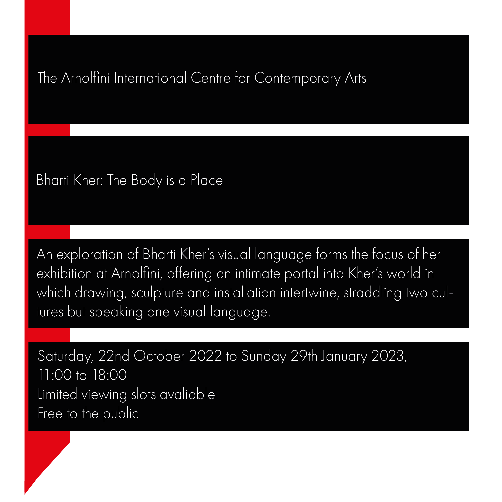
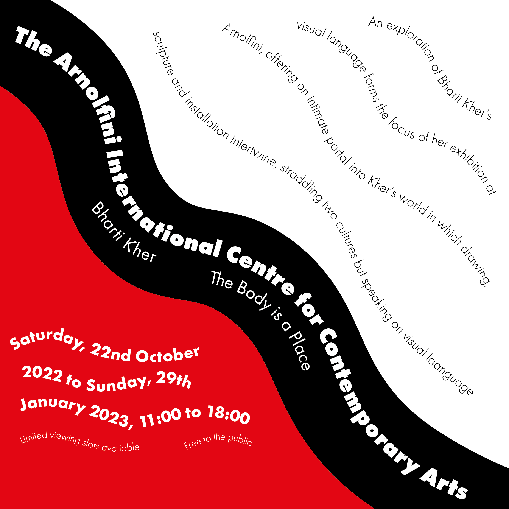

Here are my deliverables on the Axial, Radial, Dilational, Random, Grid, Modular, Transitional, and Bilateral Typographic Systems

Axial
For this (and as you will see, all the posters), I chose the Futura PT font-family, as well as a black, red and white colour scheme, which fits with the house style for my website. Axial was fairly simple, though I wanted to make the text angled to visually distinguish it from Grid, as I realised the layout of each text would be similar. I wanted to see how well red could contrast with white instead of black, though I eventually did that in other typographic systems.
Radial
This one was a bit difficult because I couldn't have the diagonal lines go the way I wanted them to while making them symmetrical to each other vertically. Once I did figure that out, I struggled on how to layout the description and the dates to line them up more consistently with this “sun” theme I had. Eventually, I just figured to sort the lines irregularly to make them more “unconventional” and probably interesting to look at.
Dilatational
This I had to experiment with illustrator more and find tutorials on YouTube on how to create the spiral effect in the background. I eventually discovered how to draw several circles at the same time and use them as paths for my text. As I was working through my typographic systems, I saw that white contrasted well with red as much as it naturally does with black. I struggled a bit with the way I should position the title/ venue name, as I wanted to place it in the centre without making the text smaller.
Random
I took this typographic system as a chance to use techniques and features of Illustrator I was unable to use in other typographic systems. Where there was white space, I tried to occupy it with a random shape of a piece of text arranged randomly. Admittedly, I could've been more random with the font-style, as I do use heavy/ extra bold for the venue name, and light for the description.
Grid
This one was fairly simple and not as complicated as the other typographic systems. Using the Z-pattern, I arranged the text where most people would usually read it, the title on the top left, the tagline on the top right, then the user will go bottom left to read the description, then move to bottom right to read the date. I also wanted to experiment if black contrasted well with red, and giving the poster a white “outline” to make the red background and black rectangles stand out.

Modular
I feel this is where I started to break how I chose my font-style for each of these texts. The examples of other modular systems I saw on Google Images and collaborative Miro boards encouraged me to have all the font-styles be light, so that the description and dates can easily fit onto a shape. Surprisingly, the title and tagline still stood out like I’ve hoped. Originally, instead of similar rectangles, I wanted to have texts clip on top of a small ellipse on the left side, but then I learnt this wasn’t modular, so I moved that idea to the Radial poster.

Transitional
This was probably one of the hardest ones among this set of 8 posters, as I constantly had to use the curvature tool to set up paths for my text. This meant that I had to keep changing what each line had what text, unlike using a regular textbox. I thought it would be nice to set up most of the text diagonally to maximise space in a way that best suited the transitional typographic system.
Bilateral
This is probably the easiest one I had to do among the 8 posters, as the examples on the Miro boards showed my it was putting the text and aligning them in the centre. I contrasted black rectangles against a red background and on top of them put white text. However, I thought that the title would stand out more if it was (one of) the only text to not be on a rectangle and have the font be black instead.